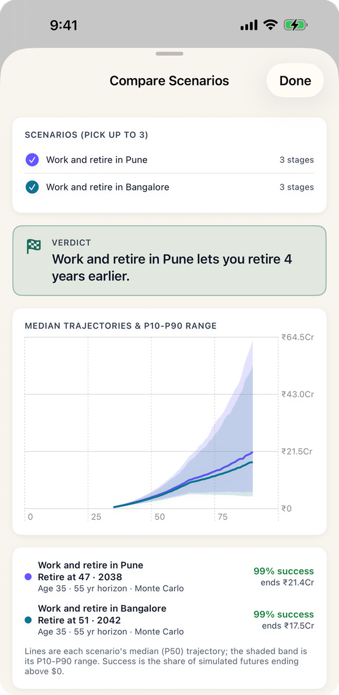
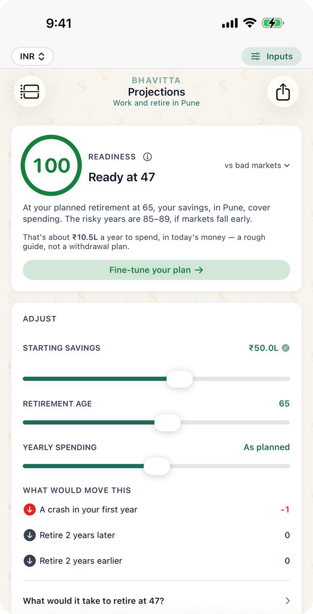

Where you live changes two things at once: how much you spend and how much of your salary you can save. Those compound together over a working life, so a city that costs ₹5 lakh a year more can cost a decade of work. The tables below take one couple, put them in each of the seven Indian cities the app has resident cost estimates for, and ask the app's solver for the earliest age they could stop working with an 80% chance of the money lasting to 90.
Which Indian city lets you retire earliest?
A couple at 35 who work and retire in the same city, at the app's resident cost of living, with health insurance from today:
| City | Living cost, year one | ₹20L salary, ₹25L saved | ₹30L salary, ₹50L saved | ₹50L salary, ₹1 Cr saved |
|---|---|---|---|---|
| Pune | ₹7.7L | 55 | 47 | 42 |
| Chennai | ₹7.7L | 55 | 48 | 42 |
| Delhi | ₹9.0L | 57 | 48 | 42 |
| Goa | ₹9.0L | 57 | 48 | 42 |
| Hyderabad | ₹8.4L | 56 | 49 | 42 |
| Bangalore | ₹9.7L | 60 | 51 | 44 |
| Mumbai | ₹12.9L | Not before 65 | 57 | 47 |
Salaries are gross, taxed under the new regime (9.6%, 15.9% and 22.0% effective). A one-year difference between cities with similar costs is within the simulation's noise; the gaps of three years and more are not.

Why does Mumbai cost so many years?
Mumbai's resident cost estimate is about ₹5 lakh a year above Pune's, mostly rent. On a ₹30 lakh salary that is nearly a third less saved every year, and a larger pot needed at the end: about ₹3.95 crore at 55 in Mumbai against ₹2.5 crore in Pune (see the corpus-by-city guide). The two effects together turn 47 into 57. Higher incomes narrow the gap, because rent becomes a smaller share of what you earn: on ₹50 lakh a year the difference is five years.

What the numbers assume
- A couple at 35 who keep the same job, in the same city, until they stop. Salary rises with the city's inflation, and nothing extra is saved beyond what is left after tax and living costs.
- Resident cost of living from the app's estimates for a comfortable couple, including rent, at each city's own inflation rate (5%; Delhi and Goa 4.5%).
- Health insurance at ₹40,000 a year today, rising 10% a year.
- Returns from the Balanced India Monte Carlo preset: 9.5% a year on average, 13% volatility. 10,000 trials.
- EPF, PPF and NPS are not modelled separately here; all savings are one pool. No children, home purchase or other big expenses.
Common questions
Which is the cheapest city in India to retire in?
Of the seven cities the app has resident cost estimates for, Pune and Chennai are the cheapest at about ₹7.7 lakh a year for a comfortable couple, including rent. Delhi and Goa cost more today but have lower inflation (4.5% against 5%), so over a long retirement they end up close to Hyderabad.
Can I retire earlier if I move from Bangalore to Pune?
On these assumptions, yes. A couple at 35 with ₹50 lakh saved and ₹30 lakh a year could stop at 51 in Bangalore and 47 in Pune. Moving only at retirement also helps; see retiring in a metro, then moving.
How much do you need to retire in Mumbai vs Bangalore?
About ₹3.95 crore in Mumbai and ₹3.05 crore in Bangalore for a couple retiring at 55, in today's money, for an 80% chance of lasting to 90. The full table is in the corpus-by-city guide.
At what age can I retire on a ₹30 lakh salary in India?
For a couple at 35 with ₹50 lakh already saved, between 47 (Pune) and 57 (Mumbai) on these assumptions, for an 80% chance the money lasts to 90. Your own age depends on how much you spend and save; the app finds it for your numbers.
Run your own number
- Set the currency to INR and enter your age, savings, salary and city on the Start tab.
- The Projections tab shows the earliest age you could stop working at 80%.
- Copy the plan, change the city on My Plan, and tap Compare to see how many years a move is worth.
Find your own number
Free on iPhone and Android. No account; your plan never leaves your phone.